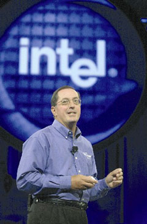
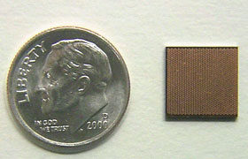

Андрей Борзенко
Вот уже пятый год Форум Intel (http://www.intel.com) для разработчиков - своего рода компьютерный Давос - становится крупнейшим событием в мировой компьютерной индустрии. Первый Форум Intel для разработчиков осенней серии 2002 г. состоялся 9-12 сентября в Сан-Хосе (шт. Калифорния), во Дворце съездов Мак-Энери. Как и форумы весенней серии, он прошел под лозунгом "Расширяя границы цифровой Вселенной".
Движущая сила индустрии
"Полупроводниковые компоненты станут той движущей силой, которая откроет новые возможности перед компьютерной и телекоммуникационной отраслями", - с таким прогнозом выступил президент корпорации Пол Отеллини на вступительном заседании. По его словам, именно 90-нм технологический процесс позволит соединить на производственных линиях корпорации логические и коммуникационные функции. В качестве иллюстрации такой интеграции технологий Отеллини продемонстрировал ключевые технологии и продукты, разрабатываемые Intel. Среди них - новая платформа Banias, которая должна выйти на рынок в первой половине следующего года. Надо отметить, что Banias - это первый микропроцессор (точнее, платформа Intel), с самого начала разрабатывавшийся для мобильных пользователей. В Banias реализуются все аспекты мобильности, что обеспечивает высокую энергетическую эффективность, производительность, компактность и возможности беспроводного сетевого подключения.
|  | Пол Отеллини открывает осеннюю серию IDF. |
В основе Banias лежит принципиально новая процессорная микроархитектура. Будущая платформа характеризуется длительным сроком службы автономного источника питания, высокой производительностью, новой конструкцией, отличающейся малыми габаритами и массой, а также предельной простотой настройки и эксплуатации средств беспроводной связи. Архитектура Banias сочетает в себе четыре новейшие технологии, ориентированные на наращивание производительности при снижении энергопотребления: Advanced Branch Prediction (усовершенствованное прогнозирование ветвления), Micro-Op Fusion ("сплавление" микроопераций), Power Optimized Processor Bus (оптимизация питания шины процессора) и Dedicated Stack Manager (выделенный диспетчер массивов).
Технология Advanced Branch Prediction позволяет увеличить производительность за счет анализа поведения программы в прошлом и прогнозирования операций, запросов на выполнение которых можно ожидать от данной программы в будущем. При готовности системы к одновременному выполнению нескольких операций технология Micro-Op Fusion обеспечивает их слияние в одну, способствуя увеличению производительности при росте эффективности энергопотребления. В отличие от многих современных систем, продолжающих снабжать те или иные компоненты питанием даже при их простое, архитектурные и схемотехнические нововведения, воплощенные в технологии Power Optimized Processor Bus, ограничивают энергопотребление только теми промежутками времени, когда оно необходимо, путем автоматического снижения напряжения и оптимизации управления буферами. Наконец, в технологии Dedicated Stack Manager реализованы специализированные аппаратные средства отслеживания загрузки системных ресурсов, благодаря которым процессор бесперебойно выполняет программные команды. Весь этот комплекс новых технологий обеспечивает существенный прирост производительности без ущерба для срока службы батарейного источника питания.
Кроме того, Пол Отеллини продемонстрировал процессор Pentium 4 с тактовой частотой 3 ГГц, заявив, что этот процессор с технологией Hyper-Threading будет выпущен уже в текущем году. Как известно, до сих пор данная технология применялась только в серверах корпоративного класса. Hyper-Threading позволяет многопоточному ПО работать на одном физическом процессоре таким образом, как если бы в его распоряжении было два процессора. Технология дает повышение производительности до 25% во многих потребительских и деловых приложениях без дополнительных затрат.
Но как бы ни были важны архитектурные усовершенствования, Intel намерена сохранять и свое лидерство в быстродействии процессоров. В частности, на Форуме был продемонстрирован новый процессор Pentium 4, работающий с тактовой частотой 4,5 ГГц.
Обсуждалась также технология LaGrande, которая будет реализована в будущих процессорах Intel. LaGrande станет базовой аппаратной технологией, которая поможет сформировать безопасную вычислительную среду для электронного бизнеса, обеспечив защиту исполнения программ, памяти и содержимого дисков. Такая аппаратная поддержка чрезвычайно важна для создания более защищенных вычислительных сред. "Это сведет к минимуму вероятность кражи номера вашей кредитной карты или проникновения любопытствующих на ваш жесткий диск, - отметил Отеллини. - В число задач, которые мы решаем, входят и защита данных пользователя, и защита информации о нем, и защита транзакций". Сейчас данные, предназначенные для коммерческих сайтов, шифруются перед отправкой на сервер. Однако на жестком диске они хранятся в первозданном виде, что делает их уязвимыми, окажись они в руках злоумышленника.
Впрочем, у LaGrande будут и другие функции. Ее можно будет применять совместно с программами управления цифровыми правами, например, Microsoft Palladium, в целях борьбы с пиратством, что, в свою очередь, будет способствовать развитию легального доступа к развлечениям. Впервые эта технология появится в процессоре Prescott, чипе Intel следующего поколения, выпуск которого запланирован на второе полугодие текущего года.
В любое время, в любом месте
По мнению представителей руководства Intel, выступавших на этом Форуме, обеспечение прямого взаимодействия между различными устройствами - это ключевая задача, стоящая перед разработчиками и пользователями высокотехнологичного оборудования. Взаимопроникновение вычислений и коммуникаций, стимулируемое постоянным ростом Интернета, приведет к тому, что в недалеком будущем все компьютеры будут связываться между собой, а все коммуникационные устройства будут выполнять вычислительные задачи.
В качестве иллюстрации прямого взаимодействия беспроводных платформ Рон Смит, старший вице-президент Intel и генеральный менеджер подразделения Wireless Communications and Computing Group, показал, как возможности цифрового дома и цифрового офиса можно перенести на наладонные устройства малых форм-факторов. На демонстрации клиентских устройств на базе архитектуры Personal Internet Client Architecture (Intel PCA) с процессором PXA250 и памятью StrataFlash можно было видеть, как беспроводные наладонные устройства с помощью современных сетей сотовой связи подключаются к домашним ПК и корпоративным сетям для просмотра видеоматериалов, фотографий и прослушивания файлов формата MP3, хранящихся на ПК или на корпоративном сервере.
Рон Смит также говорил о влиянии интеграции технологий на разработку аппаратного и программного обеспечения для рынка беспроводных портативных устройств. Он отметил, что компромисс между производительностью и сроком работы от батарей без подзарядки по-прежнему остается ключевой проблемой для разработчиков, и в качестве средства ее решения назвал такие разработки Intel, как технология изготовления единого корпуса для нескольких микросхем и расширенная интеграция. Ярчайший пример такого подхода - технология Intel "беспроводной Интернет на одной микросхеме", где на одной микросхеме реализованы функции вычислений, коммуникаций и памяти.
Новые технологии Intel Wireless MMX, Intel Persistent Storage Manager и Intel Flash Data Integrator призваны обеспечить работу беспроводных и карманных устройств, в которых применяются компоненты на основе архитектуры Intel PCA, с приложениями, не менее насыщенными функциональностью и информационным наполнением, чем их аналоги для персональных компьютеров.
В частности, технология Intel Wireless MMX представляет собой усовершенствованный набор мультимедийных команд для будущих процессоров на базе микроархитектуры Intel XScale, во многом аналогичных тем, что применяются в оборудовании на основе мощной, проверенной временем и ставшей отраслевым стандартом 64-разрядной архитектуры Intel с параллельным исполнением. Благодаря этому тысячи разработчиков прикладного ПО для ПК, уже давно освоивших технологию Intel MMX, смогут легко перенести свои насыщенные мультимедийными средствами программы на устройства, в основе которых лежит архитектура Intel PCA. Тем же, кто специализируется на разработке приложений непосредственно для беспроводных и карманных устройств, новый набор мультимедийных команд общего назначения позволит ускоренными темпами создавать такие программы, как двух- и трехмерные игры, приложения для обработки потокового видео в формате MPEG4, для распознавания речи и редактирования цифровых материалов, а также оснащать беспроводные устройства мощными инструментами криптографии.
Появление технологии Intel Wireless MMX завершает комплектацию набора инструментальных средств общего применения, ориентированных на разработчиков прикладного ПО для всего спектра оборудования на основе различных версий архитектуры Intel. В тесном сотрудничестве со сторонними поставщиками корпорация предоставит программистам комплект инструментальных средств ускоренной разработки и оптимизации прикладного ПО с применением команд, положенных в основу технологии Intel Wireless MMX. На Форуме уже была представлена бета-версия нового набора инструментальных средств разработки для оборудования на основе микроархитектуры Intel XScale, в который входят компилятор, отладочные и моделирующие программы с поддержкой технологии Intel Wireless MMX. Для дальнейшего упрощения переноса приложений с платформы ПК в будущие версии таких средств оптимизации, как Intel VTune и Integrated Performance Primitives, будет включена поддержка команд технологии Intel Wireless MMX. Для ускорения процесса разработки ПО участники программы Intel PCA Developer Network смогут получить первоочередной доступ к перечисленным инструментальным средствам.
Оснащение приложений для беспроводных и карманных устройств все новыми мультимедийными и защитными средствами предъявляет растущие требования к ресурсам памяти и хранения данных. Чтобы обеспечить поддержку этих приложений подсистемами флэш-памяти, специалисты Intel разработали ПО, оптимизированное для устройств флэш-памяти на основе микроархитектуры Intel StrataFlash. Это ПО, обслуживающее подсистему памяти архитектуры Intel PCA, представлено версиями пакетов Persistent Storage Manager (Intel PSM) и Flash Data Integrator (Intel FDI).
Технология Intel Wireless MMX поддерживается ведущими ОС, в числе которых Microsoft Windows CE.NET 4.1, SymbianOS, Palm OSv.5 и версии Linux, разработанные компаниями MontaVista и Embedix.
Интеграция вычислительных и коммуникационных ресурсов
Внедрение унифицированных технологий, способных объединить вычислительные и коммуникационные ресурсы, обеспечит компаниям, работающим в сфере ИТ, значительные преимущества перед конкурентами. В рамках Форума старший вице-президент корпорации Intel Майкл Фистер и исполнительный вице-президент Шон Мэлони рассказали о способах снижения эксплуатационных затрат и повышения гибкости ИТ-инфраструктуры путем перевода ее на модульную основу, в которой проводные и беспроводные коммуникационные средства будут сочетаться с открытыми, масштабируемыми серверными системами, сетевыми решениями и устройствами хранения данных на базе архитектуры Intel.
Майкл Фистер рассказал о разнообразных технологиях для модульных центров обработки и передачи данных и для обслуживания ИТ-инфраструктуры, предназначенных для установки широкого спектра взаимозаменяемого коммуникационного и вычислительного оборудования, основанного на общепризнанных стандартах. Он, в частности, остановился на работающих на системной шине с частотой 533 МГц процессорах Xeon, предназначенных для двухпроцессорных серверов и рабочих станций. Такие системы, выпуск которых намечен на IV квартал, представляют собой усовершенствованную платформу для обслуживания разнообразных видов деятельности малых и средних предприятий.
Помимо этого, процессор Intel Xeon MP (под кодовым наименованием Gallatin) для многопроцессорных платформ, выпуск которого готовится позднее в текущем году, призван обеспечить рост масштабируемости ИТ-инфраструктуры уровня предприятия. Системы на базе процессора Intel Xeon MP, разработанного, оптимизированного и аттестованного для установки в системы с четырьмя и более процессорами, ориентированы в первую очередь на комплексную модернизацию инфраструктуры с наращиванием ее производительности при низких затратах.
Корпорация предусматривает выпуск наборов микросхем под кодовыми названиями Granite Bay и Placer для однопроцессорных и двухпроцессорных рабочих станций соответственно, а также набора микросхем Plumas 533 для серверов. В них будет реализована системная шина 533 МГц с двухканальной памятью DDR 266 (Granite Bay и Placer также поддерживают технологию AGP 8X). Выпуск этих наборов микросхем намечен на IV квартал 2002 г.
Что касается объявленных микросхем Xeon (проектные нормы 0,13 мкм) для двухпроцессорных платформ серверов и рабочих станций с тактовой частотой 2,8 и 2,6 ГГц c кэш-памятью 2-го уровня объемом 512 Кбайт, то для них выпущены наборы E7500 и 860. Чипсет E7500 с поддержкой технологии DDR обеспечивает вдвое большую пропускную способность памяти, чем у платформ с памятью SDRAM. Ускорение доступа к памяти повышает производительность платформы и выводит на новый уровень производительность серверных приложений с высокими требованиями к вводу-выводу. Набор микросхем 860 поддерживает память RDRAM, а благодаря наличию выделенного порта AGP 4X обеспечивает поддержку графических решений на уровне, необходимом для высокопроизводительных рабочих станций.
По словам Майкла Фистера, такие крупнейшие производители компьютерного оборудования, как компании Hewlett-Packard, IBM, SGI, Unisys и NEC, продолжают выпускать новые системы на базе процессоров Itanium 2 (от 2 до 64 процессоров), а ведущие поставщики ПО уровня предприятия, среди которых корпорации Microsoft, Red Hat, Oracle, IBM, BEA, SAP и SAS, уже оптимизировали свою продукцию под процессоры семейства Itanium. Докладчик подтвердил, что выпуск нового процессора семейства Itanium под кодовым наименованием Madison намечен на лето 2003 г. и что прирост производительности новинки составит 30-50%. Процессор будет совместим не только со своими предшественниками, но и с платформами, наборами микросхем и ПО для них.
Шон Мэлони рассказал о различных стратегиях развертывания модульных сетей, включая подход к решению все более актуальной задачи - обеспечения быстрого доступа к растущим массивам данных, управления ими и их защиты в корпоративных сетях. Он представил несколько новых унифицированных структурных компонентов сетевых хранилищ данных, призванных снизить затраты на разработку и упростить решение проектных задач.
Как известно, дилемма в этой области заключается в том, что требуется обеспечить доступ к данным в любое время, из любого места и с помощью разнообразных устройств, в сочетании с непрерывным наращиванием объема массивов данных в самых разных сферах применения - от визуального моделирования в медицинских целях до пересылки видеоматериалов по электронной почте.
Начиная с выхода на рынок сетевых средств хранения данных с первым процессором ввода-вывода, выпущенным в 1996 г., Intel постоянно занимается разработкой широкого ассортимента продукции для доступа к хранилищам данных и их защиты, включая процессоры, межплатформное ПО, приложения, подсистемы, адаптеры. Корпорация стремится способствовать скорейшему внедрению таких новых стандартов и технологий хранения данных, как iSCSI, PCI Express, Serial ATA, Serial Attached SCSI и модульные решения RAID. Рабочая группа по внедрению интерфейса Serial ATA, сформированная при активном участии Intel, представила на Форуме IDF предварительный вариант окончательной версии спецификации Serial ATA II, публикация которой намечена на IV квартал текущего года. Обогащение текущей версии спецификации Serial ATA новыми функциями, предназначенными для обслуживания серверных и сетевых устройств, направлено на ее ускоренное внедрение в указанных сегментах рынка. На вторую половину 2003 г. намечено завершение второго этапа разработки спецификации Serial ATA II, а приступить к освоению продукции на базе достижений второго этапа предполагается во втором полугодии 2004 г.
Расширение закона Мура
Выступая на Форуме, главный директор корпорации Intel по технологиям Пэт Гелсингер и старший вице-президент Суньлин Чжоу указали, что полупроводниковые технологии, объединяющие в себе вычислительные и коммуникационные функции, призваны распространить действие закона Мура на такие области, как беспроводная и оптическая связь. В частности, докладчики рассказали о намерении корпорации заняться углубленными исследованиями в сфере полупроводниковых нанотехнологий, благодаря которым закон Мура останется более чем актуальным еще на протяжении долгих лет. В числе новейших технологий, над которыми работает корпорация, следует отметить "полупроводниковое радио" на базе производственного процесса с применением КМОП-структур с пониженным энергопотреблением. В ближайшие годы такие радиоустройства будут интегрированы в микросхемы Intel, в результате чего любое устройство с такой микросхемой окажется наделено функциями беспроводной связи. Пэт Гелсингер продемонстрировал настраиваемый лазер с применением новых технологий, отметив, что результаты исследований, проводимых специалистами корпорации Intel, приведут к созданию высокоинтегрированных компонентов, подпадающих под действие закона Мура и объединяющих в единой микросхеме функции цифровых и оптико-электронных коммуникационных устройств на полупроводниковой основе. Разработки, ведущиеся в этой области, направлены на резкое снижение стоимости оптических сетей путем применения технологии компонентов в производстве недорогих унифицированных полупроводниковых узлов.
Среди научно-исследовательских и проектно-конструкторских разработок Intel в области новых полупроводниковых технологий, материалов и компоновки устройств, способных расширить сферу применения закона Мура, особого упоминания заслуживают разработки в области литографии с использованием жесткого ультрафиолетового излучения (EUV), новые диэлектрики для затворов транзисторов и транзисторные устройства в целом, а также некий новый материал, который, начиная со следующего года, будет применяться в новом производственном процессе Intel с технологической нормой 90 нм.
|  | Образец микросхемы, созданной по технологии 90 нм. |
Остановившись на одном из научно-исследовательских проектов Intel в области терагерцевых транзисторов (речь идет о высокоскоростных транзисторах, запуск которых в производство намечен на вторую половину текущего десятилетия), докладчики рассказали об экспериментальных разработках высокопроизводительных неплоских КМОП-транзисторов с тройным затвором (так называемых трехзатворных транзисторов). В отличие от современных "плоских" транзисторов, в устройствах нового типа будет применяться трехмерная архитектура, увеличивающая площадь поверхности затвора, что способствует наращиванию производительности и позволяет создавать высокоскоростные процессоры. Но пока эти транзисторы перед запуском в производство нуждаются в серьезной доработке.
Kraftway DatacenterНесомненным событием стало участие российской компании Kraftway Computers (http://www.kraftway.ru) в выставке передовых компьютерных и коммуникационных технологий, организуемой в рамках IDF. Kraftway стала единственным участником из СНГ и стран Восточной Европы и одним из четырех неамериканских OEM-производителей, которым была оказана честь продемонстрировать свои решения на столь представительном мероприятии. Большой интерес вызвал представленный этой компанией Центр обработки данных (Kraftway Datacenter) - полный комплекс оборудования и сервисов, который призван обеспечить высокую производительность корпоративных решений, созданных на базе ОС Microsoft Windows .NET Datacenter Server.
Аппаратную платформу Центра составляют четыре сервера производства Kraftway - GEG Express 6402 с поддержкой до 4 процессоров Itanium 2 с тактовой частотой 1 ГГц и кэш-памятью объемом 3 Mбайт, емкостью оперативной памяти до 32 Гбайт (16 Гбайт для 4 процессоров), двумя адаптерами Intel Gigabit Ethernet и внешним RAID-накопителем. Серверный корпус имеет высоту 4U и оптимизирован для установки в стойку. Как известно, на 64-разрядных платформах Intel объем поддерживаемой памяти возрастает до архитектурного максимума, равного 16 терабайтам. Центр обработки данных характеризуется высокой производительностью для ресурсоемких приложений и баз данных, новым уровнем производительности 64-разрядных приложений, а также высокими масштабируемостью и надежностью. Комплекс, представленный Kraftway, - это решение корпоративного уровня, предназначенное для повышения эффективности ведения бизнеса и улучшения уровня информационной безопасности в соответствии с современными требованиями. В состав ОС Windows .NET Datacenter Server включены новые и усовершенствованные возможности, которые позволяют судить о ней как о наиболее надежной корпоративной серверной операционной системе из всех, созданных на данный момент корпорацией Microsoft. В число усовершенствований Windows .NET Datacenter Server входит развитие таких технологий, впервые представленных в Windows 2000 Server, как выравнивание сетевой нагрузки (Network Load Balancing, NLB), серверные кластеры и служба каталогов Microsoft Active Directory. Во время работы Форума специалисты Kraftway продемонстрировали возможности Центра обработки данных на примере генерации сложных аналитических отчетов. Для этих целей была создана тестовая база данных объемом более 100 млн записей. Время создания отчета с использованием Microsoft Data Analyzer не превышало 6-8 с. Центр обработки данных вызвал интерес не только у участников IDF, но и у представителей Intel и Microsoft, у журналистов, освещавших работу Форума, а также у представителей компаний, выставлявших на нем свои решения. Особую заинтересованность к разработкам Kraftway проявили представители одного из крупнейших производителей компьютерной техники в Германии - компании Maxdata Computer AG, и технологический лидер китайского компьютерного рынка - компания Legend Group. Стоит отметить, что в России первые поставки серверного оборудования под товарным знаком GEG Express 6402 намечены на IV квартал текущего года. Серверы будут поставляться с предустановленными 64-разрядными версиями ОС Microsoft Windows XP и различных вариантов ОС Linux (Caldera, Red Hat, SuSE и TurboLinux). |